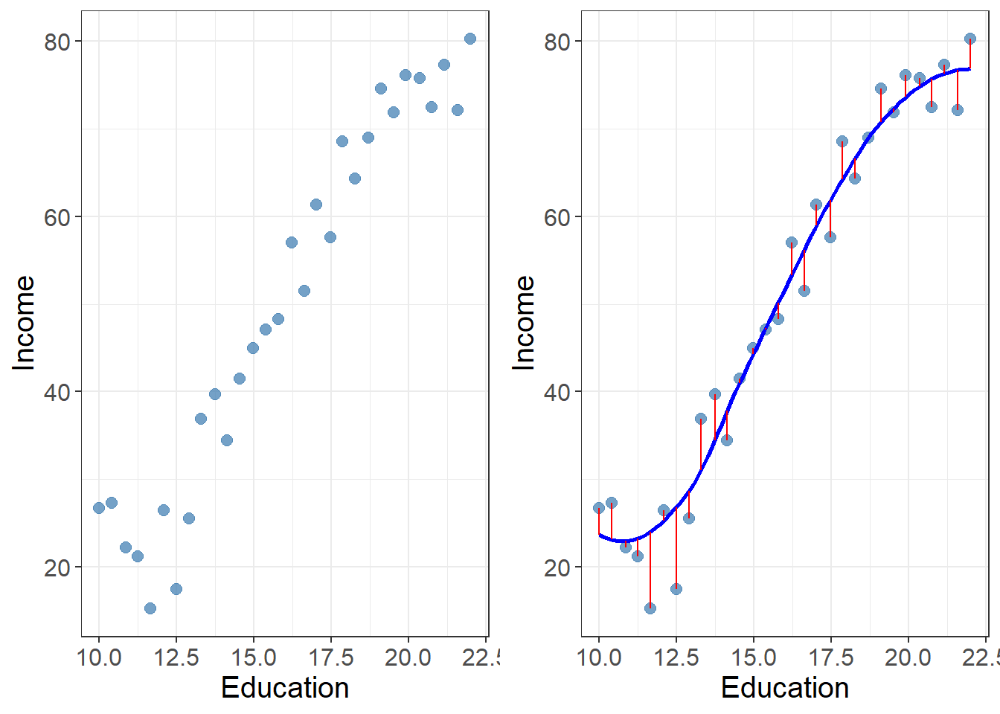

Alert - this site and blog posts are under development - Karl M.
Statistical Learning Introduction
machine learning
r
statistics
My take on machine learning based on statistics
Author
Karl Marquez
Published
August 7, 2025
What is statistical learning?
The goal of statistical learning is to develop an accurate model that can be used to predict output based on inputs. Inputs can be referred to as predictors, independent variable features, or just variables. The output is often called the response or dependent variable.
TV, radio, and newspaper seems to have a positive association to sales. The more the company spends on TV advertisement, the higher the associated sales. Newspaper seems to be the weakest advertising method.
For the three plots above, I inserted a line that results in the least amount of errors (the space between points and the line, given fixed x). Some errors are positive (points above the line), and some errors are negative (points below the line). To resolve this, we square the errors (thus, the least squares fit).
In a mathematical equation, it looks something like this: \[Y = f(X) + \epsilon\] Here, \(f\) is a fixed function of inputs, and \(\epsilon\) is a random error term, independent of the inputs. Overall, the errors have approximately a mean of zero.
To visualize, see below’s example:
Show me the code
income1 <-read.csv("Income1.csv")income1 <- income1 %>%mutate(res =residuals(loess(Income ~ Education)))incomeplot1 <-ggplot(data = income1, aes(x = Education, y = Income)) +geom_point(alpha =0.75, size =2.5) + karl_themeincomeplot2 <-ggplot(data = income1, aes(x = Education, y = Income)) +geom_point(alpha =0.75, size =2.5) +geom_smooth(method ="loess", se =FALSE, color ="blue", formula ="y ~ x") +geom_segment(aes(xend = Education, yend = Income - res), color ="red") + karl_themegrid.arrange(incomeplot1, incomeplot2, ncol =2)

The blue curve represents the relationship between income and years of education.
In the real world, the function \(f\) depends on more than one input. Adding another variable (seniority), the relationship tracking income using Education and Seniority is now a plane.
Show me the code
income2 <-read.csv("Income2.csv")model <-lm(Income ~ Education + Seniority, data = income2)edu_seq <-seq(min(income2$Education), max(income2$Education), length.out =30)sen_seq <-seq(min(income2$Seniority), max(income2$Seniority), length.out =30)grid <-expand.grid(Education = edu_seq, Seniority = sen_seq)grid$Income_pred <-predict(model, newdata = grid)plot_ly() %>%add_markers(data = income2, x =~Education, y =~Seniority, z =~Income,marker =list(color ='blue'), name ="Data Points") %>%add_surface(x = edu_seq, y = sen_seq,z =matrix(grid$Income_pred, nrow =30, ncol =30),opacity =0.5, name ="Regression Plane") %>%layout(scene =list(xaxis =list(title ="Education"),yaxis =list(title ="Seniority"),zaxis =list(title ="Income") ))
Surface plane represents relationship between income and years of education and senority
As more inputs are innvolved and included in the model, the more complicated the function gets.
In essence, statistical learning refers to approaches for estimating \(f\), to attempt to predict \(Y\).